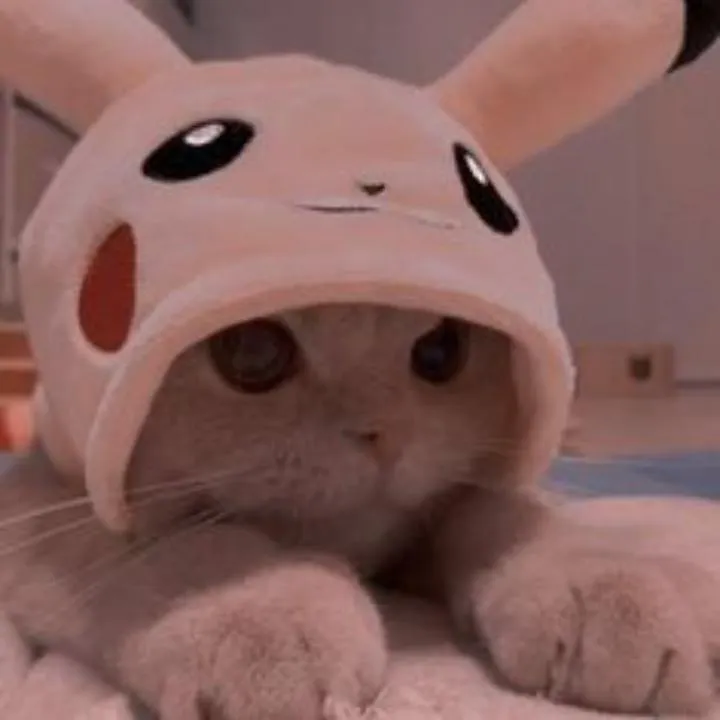
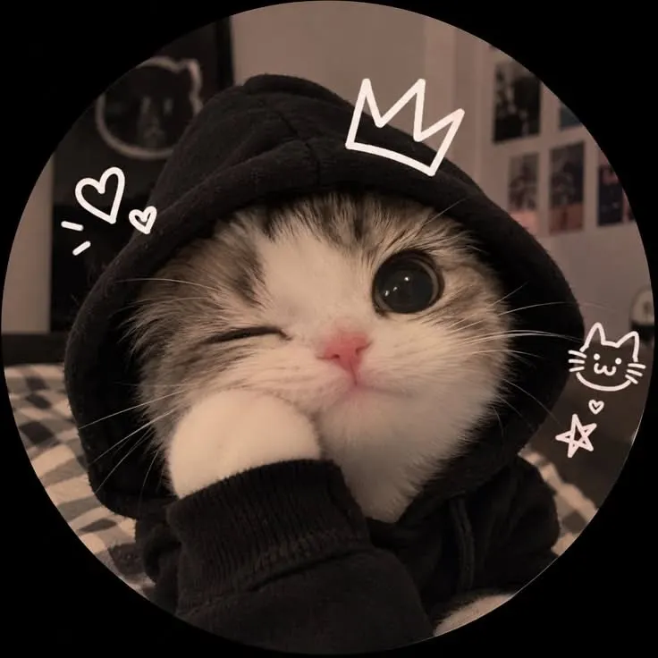

a very serious question, actually
Will you be my girlfriend?
There is a tiny cat committee waiting for your answer.

choose wisely, the cat is watching
the committee requests a recount
please, do you really want to reject such a cute and handsome boy
Look into those eyes and try saying no again.

no pressure. except maybe a little.
final, final check
Are u really sure
This is your last chance to be dramatic about it.
the YES button has stage fright
officially the best answer
ohh my lady, i promise to serve you till death
A small promise, surrounded by an unreasonable amount of love.